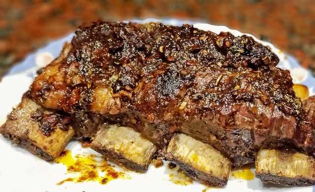

Recipe: roast argentinian

description
This roast is a typical food from Argentina and nearby countries (the preparation may vary depending on the country) this food consists of beef cooked on a grill with charcoal, it is a very easy and delicious dish
ingredients
preparation
-
Add a lot of salt to the meat on both sides (preferably coarse salt) and let it rest while you do the next step.
-
set fire to coal until it turns into fathoms
-
When the fathoms were made, put the fathoms on the spit (you must place your hand on top of the fathoms and if it holds for 10 seconds, it is the ideal height, if it doesn't hold, you should raise the grill, if you hold for more than 10 seconds, you should lower the grill)
-
place the meat on the bone side until it is cooked or takes on a darker color.
-
Turn the meat to the other side and wait until it is the way you want to eat it. You will find out by cutting the meat and seeing if it is raw or if it is very cooked.
-
serve and enjoy
aditional: sauce
ingredients
- 1 cup of water
- 1 tablespoon coarse salt
- 1 head of garlic, cloves separated and peeled
- 1 cup fresh parsley
- 2 cup fresh (or dried) oregano leaves
- 2 teaspoons of ground chili
- 1/4 cup vinegar
- 1/2 cup oil
preparation
add all these ingredients in a container and use with sause for meat